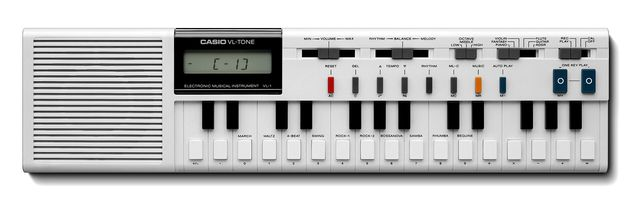

Scheda 057 · 1980 circa · Tokyo, Giappone
Casio VL-Tone VL-1
Una calcolatrice che suona. E con cinque suoni di plastica ci hanno fatto «Da Da Da»
29 tasti, un display a cristalli liquidi e una calcolatrice vera dentro: Casio la vendeva come giocattolo.
Il suono vero · 0:42
Un Casio VL-1 col suo ritmo «rock 1».
0:00 / 0:42
Registrazione di Havelbaude · CC BY-SA 4.0 · Wikimedia Commons · estratto di 42 s, volume normalizzato
- USCITA
- 1979-82?
- TASTI
- 29
- SUONI
- 5 + ADSR
- PREZZO
- 69,95 $
La macchinaChe cos'è
Sta in una mano. A sinistra la griglia dell'altoparlante, al centro il display e la scritta ELECTRONIC MUSICAL INSTRUMENT VL-1, poi due ottave e mezzo di tastini. Sotto i tasti bianchi, stampati, ci sono i numeri e i segni: premete CAL e diventa una calcolatrice, premete MUSIC e torna uno strumento. I suoni sono cinque e i nomi stanno sopra i due cursori, piano, violino, flauto, chitarra, fantasy. Sono imitazioni pessime e lo sanno anche loro. Il sesto si chiama ADSR e ve lo scrivete da soli.
Chi l'ha costruitaI fratelli Kashio
La Casio nasce nel 1946 a Tokyo e per trent'anni fa una cosa sola, calcolatrici. Nel 1957 Toshio Kashio mette a punto la 14-A, la prima calcolatrice compatta interamente elettrica, e la ditta cresce su quella. Negli anni Settanta i chip da calcolatrice costano ormai pochissimo e qualcuno in azienda fa la domanda giusta: se questo coso sa contare, può anche contare le vibrazioni di una nota. Il VL-1 è la risposta. Non esce dal reparto strumenti musicali, perché il reparto strumenti musicali non c'era ancora.
Come funzionaCosa c'è dentro
Si vede che il cuore è un chip da calcolatrice da come si programma il sesto suono. Premete ADSR e dovete digitare otto cifre in fila: la prima sceglie la forma d'onda, le altre l'attacco, il decadimento, il livello e la durata del sostegno, il rilascio, il vibrato, il tremolo. Un inviluppo che si scrive come un numero di telefono. Il risultato quasi sempre suona peggio dei cinque preimpostati, però è un ADSR vero, su una macchina da 69,95 dollari che la gente comprava per i bambini.
Chi l'ha usataNei dischi
- Trio«Da Da Da» (1982): ritmo Rock-1 e voce Piano, come escono dalla scatola
- The Human Leaguefra i primi a prenderla sul serio in studio
- Stevie Wondercitato fra chi l'ha usata dalla scheda del museo che la espone
Da ascoltare
Trio, «Da Da Da» (1982)
La batteria è il ritmo Rock-1 della macchinetta, lasciato girare dall'inizio alla fine; il motivetto è la voce Piano.
L'aneddotoUna storia
Non si riesce a stabilire di che anno sia. Wikipedia dice 1981. Vintage Synth Explorer dice giugno 1979. La didascalia su Commons dice 1980. La targhetta del museo che la espone, sotto la vetrina, dice «um 1982», cioè circa 1982. Quattro fonti, quattro anni. Succede agli oggetti usciti come giocattoli: arrivano nei negozi senza comunicati stampa e senza recensioni, e quando qualcuno si accorge che contano sono passati dieci anni e la data se l'è persa per strada.
Avvertenze
Cinque suoni di fabbrica, il sesto in otto cifre. Sbagliatene una e non c'è un tasto per tornare indietro: si ribatte tutto.
Il reel
La versione corta
Le cose da sapere in fila, una schermata alla volta, col suono della macchina quando ne esiste una registrazione libera. Aprilo su Instagram ↗
Il carosello
Le 6 tavole
Da dove viene
Fonti
- «Casio VL-1» — Wikipedia (EN) verificata il 2026-10-01
- «Casio VL-Tone VL-1» — Vintage Synth Explorer (data: giugno 1979) verificata il 2026-10-01
- «Casio» — Wikipedia (EN): i fratelli Kashio e la calcolatrice 14-A del 1957 verificata il 2026-10-01
- «File:Casio VL-1 Inv Nr 81934.jpg» — Wikimedia Commons, con la targhetta «um 1982» verificata il 2026-10-01
Foto: Dontpanic · CC BY-SA 3.0 · Wikimedia Commons
Foto nelle tavole: Reinraum · pubblico dominio · Wikimedia Commons
Suono: Registrazione di Havelbaude · CC BY-SA 4.0 · Wikimedia Commons · estratto di 42 s, volume normalizzato